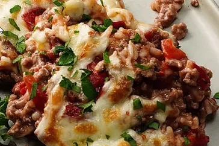

Cheesy Hamburger Rice Casserole

Description
A five-ingredient hamburger rice casserole topped with
melty cheese. My grandma used to make this and it was
always a hit. She uses American cheese, but I make it
with mozzarella. Very easy and yummy!
Ingredients
- 1 pound ground beef
- 1 can cream of mushroom soup
- 1 can diced tomatoes with juice
- 1/2 cup long grain white rice
- 3/4 cup shredded mozzarella cheese
- Salt and pepper to taste
Steps
- Crumble the ground beef into a skillet over medium-high heat. Cook and stir until evenly browned. Drain off grease, and stir in the cream of mushroom soup, tomatoes, and uncooked rice. Cover, and simmer over low heat, stirring occasionally, until rice is cooked, about 15 minutes.
- Preheat the oven's broiler. When the rice is done cooking, transfer the contents of the skillet to a casserole dish. Cover with a layer of cheese.
- Broil until the cheese is melted and toasty. Season with salt and pepper to taste, and enjoy!